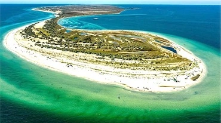
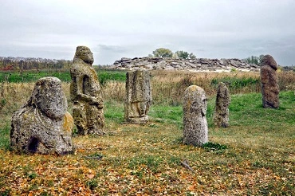
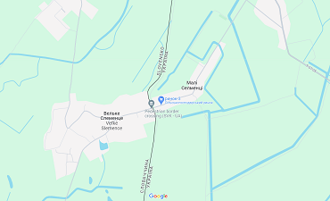

Історія України, її культура, суспільство, міста, села та природа сповнені чудес і дивовижних фактів, про які самі українці іноді не знають.
Україна має багатовікову історію і за час свого існування країна пройшла багато етапів становлення, які
закарбували характер та світосприйняття сучасних українців.
Крім цього, багата культурна спадщина та дивовижна природа, роблять Україну унікальною країною, яка приховує
у собі незліченну кількість приголомшливих фактів.
І підтверджують це тисячі іноземців, які приїздять ознайомитись з Україною навіть під час війни.
Дивовижні факти про природу та ресурси України
У 1929 році СРСР заявила, що на території України зосереджено близько 60% від усіх розвіданих запасів газу, після чого країна стала одним з найбільших експортерів блакитного палива у Європу на певний проміжок часу. А сьогодні Україна посідає 3 місце за кількістю розвіданих даних сланцевого газу в Європі, випереджають її тільки Польща та Франція.
Україна має найбільший запас марганцевої руди у світі, 2,3 млрд тонн або близько 11% від усіх покладів на Землі.
Українська печера “Оптимістична” – є найдовшою гіпсовою печерою у світі та другою за протяжністю після “Мамонтової печери” в США.
На території України зосереджено 1/4 всіх запасів чорнозему на Землі.
Єдина у світі підводна річка знаходиться у Чорному морі. Якби вона була на суші, то займала б шосте місце за обсягами води, що переносить (22 тис. кубічних метрів на секунду).
В Україні є свої Мальдіви – дивовижні пляжі з білим піском та прозорим блакитним морем. Знаходяться вони на понівеченому росією заповідному острові Джарилгач, що на Херсонщині. Зауважимо, що місцеві флора й фауна занесені до Червоної книги, а також тут раніше жили мустанги й верблюди

Вражаючі факти про культуру та історію України
Перша у світі конституція, в які окреслили права громадян та уряду, була розроблена та введена в дію у 1710 році українським гетьманом Пилипом Орликом. Для порівняння, конституція США, була розроблена і прийнята у 1787 році.
Запорізька Січ — суспільно-політична та військово-адміністративна організація українського козацтва, що була заснована у 1553-1554 роках, сьогодні вважається одним з перших демократичних утворень у світі.
З 12 лавр світу 4 знаходяться в Україні: це Києво-Печерська лавра (Київ, існує з 1051 року), Почаївська лавра (Почаїв, Тернопільської області, з 1833), Свято-Успенська Святогірська лавра Святогірськ, Донецької області (отримала статус лаври у 2004 році) та Свято-Успенська Унівська лавра студійського уставу (Унів з 1898).
Українські народні пісні стали підґрунтям для створення багатьох світових музичних шедеврів. Наприклад, композиція “Summertime” Джорджа Гершвіна була написана на основі української колискової “Ой, ходить сон коло вікон”, яку він почув у виконанні Національного хору України під керівництвом Олександра Кошица.
Україна відмовилася від третього у світі (після США та рф) за величиною арсеналу ядерної зброї. У момент проголошення незалежності, на території України було розташовано більш як 1000 ядерних боєголовок і ракет.
Найстародавніша у світі мапа, вибита на кістці мамонта, а також найстародавніше поселення Homo Sapiens знайдені в Україні, у селі Межиріччя Рівненської області. Їм 14,5-15 тисяч років.
На території України знаходиться цивілізаційна колиска світу, старша за Єгипетські піраміди та Стоунхендж – комплекс Кам'яна могила у Запорізькій області.

Факти та згадки про сучасну Україну, які ви не чули раніше
У 2011 році гра Tom Clancy's Ghost Recon: Shadow Wars передбачила події, які відбудуться через 3 роки, адже значна частина сюжету гри присвячена українському спротиву та захисту від російських військ. А у грі Combat Mission: Black Sea, що вийшла у 2014 році Україна воює проти рф разом з НАТО.
У фільмі Гері Грея “Пограбування по-італійськи”, що вийшов у 2023 році є фраза, яка у жартівливій формі дуже точно описує характер українців. Так, Скінні Піт каже своєму приятелю головному-герою фільму “Ти що – несповна розуму? Послухай мене, Чарлі. Їдь з Лос-Анджелеса. Мерщій. Тому що я знаю одне: ніколи не жартуй з матінкою-природою, тещею й клятими українцями!”
Знищений росією літак Ан-225 “Мрія” в аеропорті Гостомеля під Києвом на початку повномасштабного вторгнення, мав найбільшу вантажність у світі. До речі “Мрія” встановила 462 авіаційних рекорди, з них понад 240 – світові.
Один з сучасних пунктів пропуску на кордоні між Україною та Словаччиною – розділяє селище навпіл, утворюючи Малі Селменці та Великі Селменці. Сталося це через те, що колись село Селменці було розділене між СРСР і Чехословаччиною прямо по одній із вулиць
